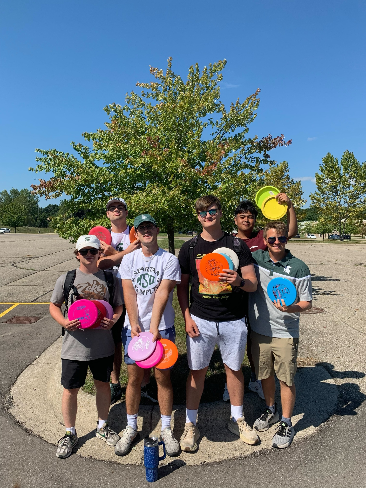

Having Fun Playing Disc Golf!
Recently, I have picked up the sport of Disc Golf once again. I have always enjoyed playing Disc Golf and other games involving a frisbee.
My family and I would spend plenty of weekends in the summer and fall disc golfing at different courses throughout the state. When I was in High School, my hometown created a disc golf course that was right across the street from my house. Needless to say, I spent countless hours out on that course.
However, once I got to college, I haven’t been able to play as much because of a lack of equipment and I had no one around me that was very interested in the sport. I ended up joining an intramural Ultimate Frisbee team during my junior year here at MSU because I did miss throwing a frisbee around.
When school started this year, I became friends with someone who is a big fan of Disc Golf. This caused me to start spending more weekends back on Disc Golf courses around the East Lansing area.
I have played at the Trinity Church Disc Golf Course multiple times in the past month, averaging a score of +14. I’m excited to keep playing and working towards lowering my score in the future.
| Player | Hole #1 | Hole #2 | Hole #3 |
|---|---|---|---|
| Michael | 3 | 3 | 4 |
| Maria | 3 | 4 | 5 |
| Reese | 4 | 3 | 4 |
